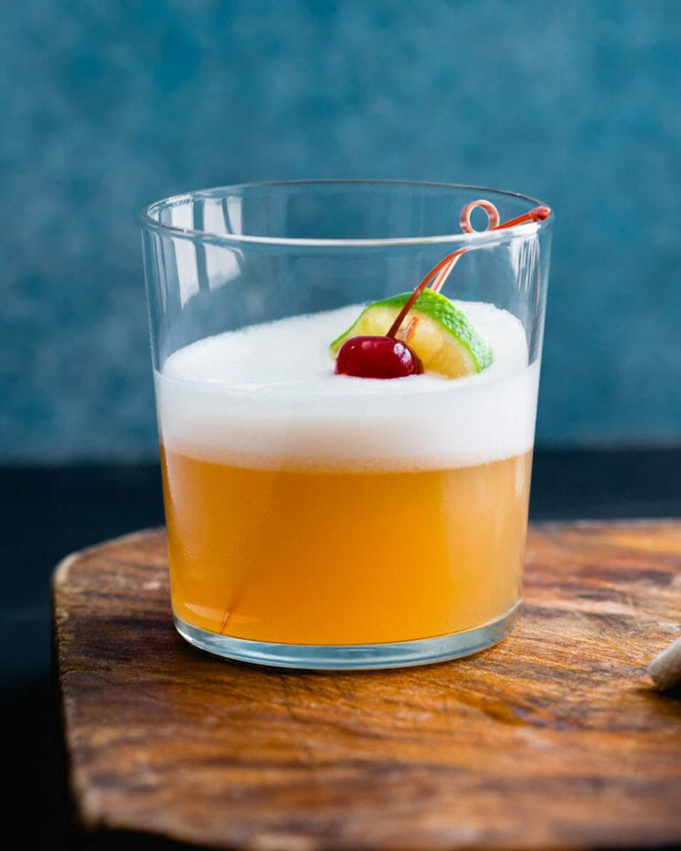
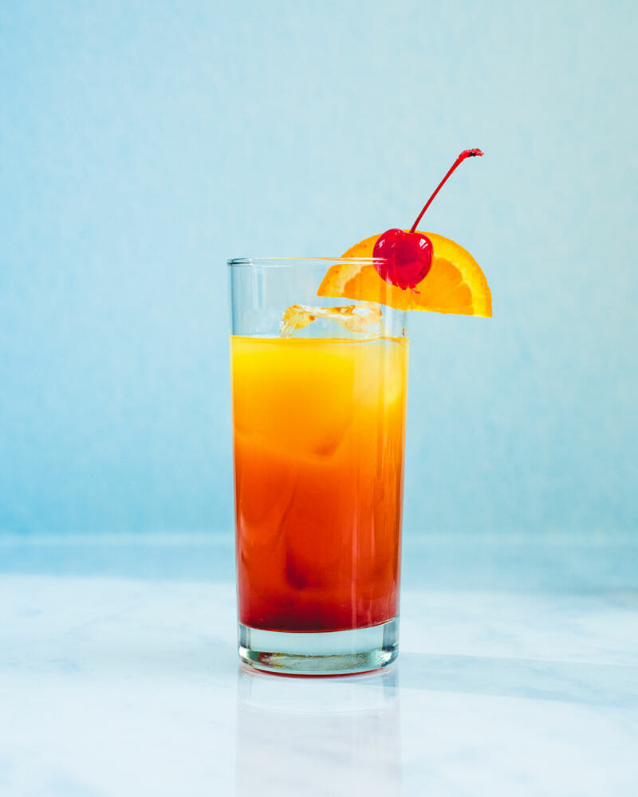
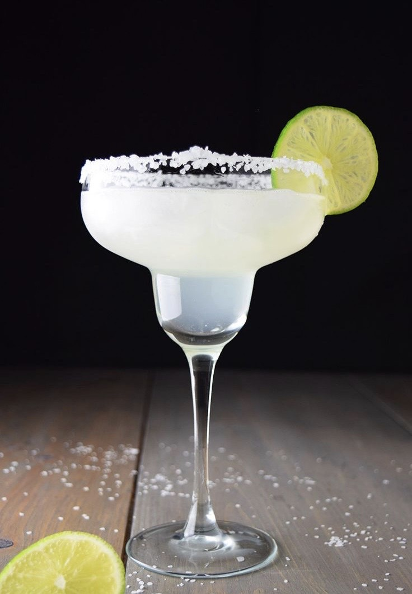
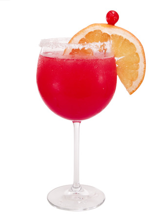
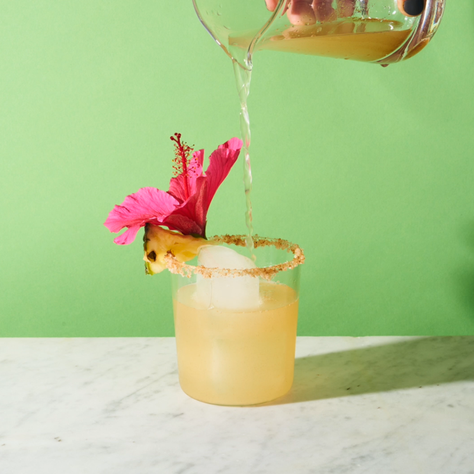

| 칵테일 이름 | 레시피 | 이미지 |
|---|---|---|
| 데킬라 사워 Tequila Sour |
데킬라 - 2oz (60ml) 레몬 주스 - 1/2oz (15ml) 설탕 - 1tsp 셰이크 |
 |
| 데킬라 선라이즈 Tequila Sunrise |
데킬라 - 45 ml (1 1/2 oz) 오렌지 주스 - 90 ml (3 oz) 그레나딘 시럽 - 15 ml (1/2 oz) |
 |
| 마가리타 Margarita |
아가베 100% 데킬라 - 50 ml (1 2/3 oz) 트리플 섹 - 20 ml (2/3 oz) 직접 착즙한 라임 주스 - 15 ml (1/2 oz) 셰이크 |
 |
| 아이스브레이커 Ice Breaker |
데킬라 - 1oz (30ml) 자몽 주스 - 1oz (30ml) 트리플 섹 - 1tsp 그레나딘 시럽 - 1tsp 셰이크 |
 |
| 자라나 Jarana |
데킬라 - 1 1/2oz (45ml) 파인애플 주스 - 4oz (120ml) 설탕 - 2tsp 빌드 |
 |